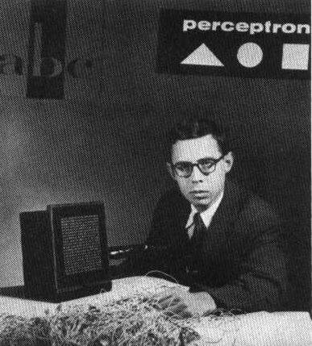

Урок 3. Персептроны
В предыдущей главе вы усвоили необходимые общие теоретические сведения по ИНС: устройство искусственного нейрона и нейронных сетей, общие подходы к их обучению.
Тема данной главы – простейший вид искусственных нейронных сетей – персептроны. Вы узнаете об их устройстве, научитесь их создавать и обучать.
История персептрона
Понятия искусственного нейрона и искусственной нейронной сети появились достаточно давно, еще в 1943 году. Эта была чуть ли не первая статья, в которой предпринимались попытки смоделировать работу мозга. Ее автором был Уоррен Мак-Каллок.
Эти идеи продолжил нейрофизиолог Фрэнк Розенблатт. Он предложил схему устройства, моделирующего процесс человеческого восприятия, и назвал его «персептроном» (от латинского perceptio – восприятие). В 1960 году Розенблатт представил первый нейрокомпьютер – «Марк-1», который был способен распознавать некоторые буквы английского алфавита.

Таким образом персептрон является одной из первых моделей нейросетей, а «Марк-1» – первым в мире нейрокомпьютером.
Персептроны стали очень активно исследовать. На них возлагали большие надежды. Однако, как оказалось, они имели серьезные ограничения. Был такой ученый Минский, который был сокурсником Розенблатта. Видимо, ему не очень понравилось, как все вокруг боготворили персептроны, и он написал целую книгу (1971 год), в которой провел детальнейший их анализ, попутно показав, что они не так уж много и умеют, да и вообще сильно ограничены.
Розенблатт не успел написать ответ Минскому, так как погиб в свой 43 день рождения при крушении лодки.
С тех пор энтузиазм ученых в исследовании персептронов и искусственных сетей поутих. Хотя Минский позднее говорил, что сожалеет, что его книга нанесла такой удар по концепции персептронов. Стали перспективными другие области. Про нейросети забыли. Но потом были открыты новые виды сетей, а также алгоритмы их обучения, что вновь возродило интерес к этой области.
Теперь подробно разберем, что из себя представляет персептрон.
Персептрон
В основе персептрона лежит математическая модель восприятия информации мозгом. Разные исследователи по-разному его определяют. В самом общем своем виде (как его описывал Розенблатт) он представляет систему из элементов трех разных типов: сенсоров, ассоциативных элементов и реагирующих элементов.
Рассмотрим принцип работы персептрона.
Первыми в работу включаются S-элементы. Они могут находиться либо в состоянии покоя (сигнал равен 0), либо в состоянии возбуждения (сигнал равен 1).
Далее сигналы от S-элементов передаются A-элементам по так называемым S-A связям. Эти связи могут иметь веса, равные только -1, 0 или 1.
Затем сигналы от сенсорных элементов, прошедших по S-A связям попадают в A-элементы, которые еще называют ассоциативными элементами. Стоит заметить, что одному A-элементу может соответствовать несколько S-элементов. Если сигналы, поступившие на A-элемент, в совокупности превышают некоторый его порог θ, то этот A-элемент возбуждается и выдает сигнал, равный 1. В противном случае (сигнал от S-элементов не превысил порога A-элемента), генерируется нулевой сигнал.
Почему A-элементы назвали ассоциативными? Дело в том, что A-элементы являются агрегаторами сигналов от сенсорных элементов. Например, у нас есть группа сенсоров, каждый из которых распознает кусок буквы «Д» на исследуемой картинке. Однако только их совокупность (то есть когда несколько сенсоров выдали сигнал, равный 1) может возбудить A-элемент целиком. На другие буквы А-элемент не реагирует, только на букву «Д». То есть он ассоциируется с буквой «Д». Отсюда и такое название.
Можно привести и другой пример. На самом деле ваши глаза состоят из невероятного количества S-элементов (сенсоров), улавливающих падающий свет (около 140 000 000). И у вас какой-то A-элемент, который распознает конкретную часть лица. И вот вы увидели на улице человека. Некоторые A-элементы, которые распознали конкретные части лица, возбуждаются.
Далее сигналы, которые произвели возбужденные A-элементы, направляются к сумматору (R-элемент), действие которого вам уже известно. Однако, чтобы добраться до R-элемента, они проходят по A-R связям, у которых тоже есть веса. Однако здесь они уже могут принимать любые значения (в отличие от S-A связей).
Финальный аккорд. R-элемент складывает друг с другом взвешенные сигналы от A-элементов и, если превышен определенный порог, генерирует выходной сигнал, равный 1. Это означает, что в общем потоке информации от глаз мы распознали лицо человека.
Если порог не превышен, то выход персептрона равен -1. То есть мы не выделили лицо из общего потока информации.
Так как R-элемент определяет выход персептрона в целом, его назвали реагирующим.
Теперь вы знаете, что такое персептрон и как он работает. Сформулируем теперь его точное определение:
Персептрон (Perceptron) — простейший вид нейронных сетей. В основе лежит математическая модель восприятия информации мозгом, состоящая из сенсоров, ассоциативных и реагирующих элементов.
Выше я рассказал о персептроне в самом общем виде. Есть несколько подвидов персептронов, на некоторых из которых мы и сконцентрируем все внимание.
Классификация персептронов
Исторически сложилось несколько типов персептронов. Их часто путают, так как разные авторы, писавшие статьи на эту тему, зачастую понимали под персептроном похожие, но все же разные математические модели. Именно поэтому человеку, который только начинает изучение ИНС бывает трудно разобраться, что такое персептрон, ведь в разных книгах на эту тему его определяют по-разному. Я постараюсь разъяснить все так, что вы не будете путаться в терминологии, читая другие книги.
Персептрон с одним скрытым слоем
Я уже приводил общее определение персептрона выше. Теперь рассмотрим его подвид – персептрон с одним скрытым слоем (или элементарный персептрон). Именно этот тип персептронов часто подразумевают, когда говорят о персептронах вообще.
Почему слой именно скрытый? Потому что слой А-элементов расположен между слоями S-элементов и R-элементов.
Персептрон с одним скрытым слоем — персептрон, у которого имеется только по одному слою S, A и R элементов.
Обе картинки выше изображают именно персептрон с одним скрытым слоем.
Однослойный персептрон
Названия похожие. Но это не тоже самое, что и персептрон с одним скрытым слоем, хотя так может показаться. Именно этот тип персептронов мы и будем изучать подробнее всего. Этот тип персептронов, как и элементарные персептроны, тоже часто подразумевают, когда говорят о персептронах вообще.
Его ключевая особенность состоит в том, что каждый S-элемент однозначно соответствует одному A-элементу, все S-A связи имеют вес, равный +1, а порог A элементов равен 1.
Объясню подробнее. Возьмем картинку персептрона в общем смысле и преобразуем ее в картинку однослойного персептрона.
Изначально персептрон в общем смысле выглядит так:
Исходя из ключевой особенности однослойного персептрона сенсор может быть однозначно связан только с одним ассоциативным элементом. Посмотрим на белый сенсор на картинке (левый верхний угол). Он передает сигнал салатовому (первому) и серому (четвертому) ассоциативным элементам. Непорядок. Сенсор может передавать сигнал только одному А-элементу. Убираем лишнюю связь. Ту же операцию проводим и с другими сенсорами.
Обязательно убедитесь, что поняли фразу «каждый S-элемент однозначно соответствует одному A-элементу». Это означает, что каждый сенсор может передавать сигнал только одному А-элементу. Однако это утверждение вовсе не запрещает ситуации, когда несколько сенсоров передают сигнал на один А-элемент, что и продемонстрировано на картинке выше (1, 2 и 3 А-элементы).
Далее, S-A связи всегда имеют вес, равный единице, а порог А-элементов всегда равен +1. С другой стороны нам известно, что сенсоры могут подавать сигнал равный только 0 или 1.
Рассмотрим первый S-элемент на последней картинке. Пусть он генерирует сигнал, равный единице. Сигнал проходит по S-A связи и не изменяется, так как любое число, умноженное на 1 равно самому себе. Порог любого А-элемента равен 1. Так как сенсор произвел сигнал, равный 1, то А-элемент однозначно возбудился. Это означает, что он выдал сигнал, равный 1 (так как он тоже может генерировать только 1 или 0 на своем выходе). Далее этот единичный сигнал умножается на произвольный вес A-R связи и попадает в соответствующий R-элемент, который суммирует все поступившие на него взвешенные сигналы, и если они превышают его порог, выдает +1. В противном случае выход данного R-элемента равен -1.
Ничего на напоминает? Правильно, не считая сенсорных элементов и S-A связей, мы только что описали схему работы искусственного нейрона. И это неслучайно. Однослойный персептрон действительно представляет собой искусственный нейрон с небольшим отличием. В отличие от искусственного нейрона, у однослойного персептрона входные сигналы могут принимать фиксированные значения: 0 или 1. У искусственного нейрона на вход можно подавать любые значения.
В персептроне R-элементы суммируют взвешенные входные сигналы и, если взвешенная сумма выше некоторого порога, выдают 1. Иначе выходы R-элементов были бы равны -1.
Нетрудно догадаться, что такое поведение легко задается функцией активации под названием функция единичного скачка, которую мы уже рассматривали во 2 главе. Отличие заключается в том, что функция единичного скачка выдает 0, если порог не превышен, а здесь выдает -1, но это не существенно.
Таким образом становится ясно, что часть однослойного персептрона (выделена черным прямоугольником на картинке выше) можно представить в виде искусственного нейрона, но ни в коем случае не путайте два этих понятия. Во-первых, никто не отменял S-элементы, которых в искусственном нейроне просто нет. Во-вторых, в однослойном персептроне S-элементы и A-элементы могут принимать только фиксированные значения 0 и 1, тогда как в искусственном нейроне таких ограничений нет.
Однослойный персептрон — персептрон, каждый S-элемент которого однозначно соответствует одному А-элементу, S-A связи всегда равны 1, а порог любого А-элемента равен 1.
Часть однослойного персептрона соответствует модели искусственного нейрона.
Однослойный персептрон может быть и элементарным персептроном, у которого только по одному слою S,A,R-элементов.
Многослойный персептрон
Под многослойным персептроном понимают два разных вида: многослойный персептрон по Розенблатту и многослойный персептрон по Румельхарту.
Многослойный персептрон по Розенблатту содержит более 1 слоя А-элементов.
Многослойный персептрон по Румельхарту является частным случаем многослойного персептрона по Розенблатту, с двумя особенностями:
- S-A связи могут иметь произвольные веса и обучаться наравне с A-R связями.
- Обучение производится по специальному алгоритму, который называется обучением по методу обратного распространения ошибки.
Этот метод является краеугольным камнем обучения всех многослойных ИНС. Во многом благодаря ему возобновился интерес к нейронным сетям. Но обсуждать мы его будем в других главах.
Многослойный персептрон по Розеблатту — персептрон, у которого имеется более 1 слоя А-элементов.
Многослойный персептрон по Румельхарту — многослойный персептрон по Розенблатту, у которого обучению подлежат еще и S-A связи, а также само обучение производится по методу обратного распространения ошибки.
Опорная схема
Скорее всего, ваша голова уже кипит от приведенной выше классификации. Соглашусь, она не самая удобная и, наверное, можно было бы придумать что-нибудь более простое и лаконичное, однако так уж сложилась история искусственных нейросетей. Для облегчения запоминания классификации (а ее обязательно надо помнить, чтобы ориентироваться в материале) я приведу опорную схему.
Мы разобрались с видами персептронов. Далее в этой главе рассмотрим только однослойный персептрон с одним скрытым слоем.
Говоря про персептрон я буду иметь ввиду именно его.
Какие задачи решает персептрон?
Перед началом практики я хотел бы рассказать подробнее о том, какие задачи персептрон способен решать, а какие нет. Также я приведу несколько удобных аналогий, позволяющих понять, возможно ли использовать персептрон в данной задаче или нет. Это крайне важно, так как персептрон, как простейший вид нейросети, не так уж много и умеет.
Персептроны очень хорошо решают задачи классификации. Что это означает? Если у вас есть группы объектов (например, кошки и собаки), то персептрон после обучения сможет указывать к какой группе относится объект (к кошкам или собакам).
«Очень хорошо» – понятие растяжимое. Насколько хорошо? Розенблатт доказал несколько теорем, суть которых я попытаюсь донести максимально понятным образом.
1. Если имеется поле сенсоров (матрица) и какая-то классификация, зависящая от него, то множество элементарных персептронов, проводящих успешную классификацию не является пустым.
Объясняю на пальцах. Под полем сенсоров понимается множество всех S-элементов. Под классификацией – придуманные нами классы (те же кошки и собаки). Под «непустым множеством элементарных персептронов, проводящих успешную классификацию» понимается, что найдется хотя бы один перспетрон, справившийся с классификацией объектов.
Рассмотрим на примере.
Я хочу, чтобы персептрон научился различать кошек и собак. Это задача довольно трудная, но мы ее существенно упростим.
У нас будет 3 сенсора: длина лап, окрас и форма морды. Так как S-элементы могут принимать значения 0 или 1, то условимся, что значения 1 будут соответствовать коротким лапам, смешанному окрасу и округлая морда соответственно. Значения 0 будут означать признак собаки на данном S-элементе (длинные лапы, однотонный окрас и вытянутая морда). Вот мы и получили сенсорное поле. Если хотите, его можно представить в виде множества возможных значений 0 и 1 у каждого S-элемента. Например, абсолютная кошка должна вызвать срабатывание всех S-элементов {1,1,1}.
Идеальной же собаке соответствует следующий набор выходов S-элементов: {0,0,0}.
Сами по себе сенсоры не играют роли. Но добавив к набору выходов сенсоров смысл: кошка или собака, мы тем самым задали некоторую классификацию. Математически это означает, что мы задали некоторую функцию, которая принимает набор выходов S-элементов, а ее значением является 0 или 1 (кошка или собака).
Из приведенной выше теоремы следует, что множество персептронов, правильно проводящих нашу классификацию не является пустым. То есть такие персептроны есть!
Но ведь можно выбрать любой набор S-элементов и любую классификацию. И множество «решений» все равно не будет пустым!
Это означает, что теоретически персептроны способны решать любую задачу на классификацию.
Важное замечание!
1. Речь идет об элементарных персептронах.
2. Объекты классификации должны обладать свойством линейной разделимости (подробнее о ней ниже).
Но есть и вторая теорема, доказанная Розенблаттом:
2. Если имеется поле сенсоров (матрица) и какая-то классификация, зависящая от него, то процесс обучения с коррекцией ошибок, начинающийся с произвольного исходного состояния, всегда приведёт к достижению решения в течение конечного промежутка времени.
Под произвольным исходным состоянием тут понимается персептрон с произвольными S-A и A-R весами связей. Под решением в теореме понимается персептрон с определенными весами, успешно решающий нашу задачу на классификацию.
Эта теорема не оставляет задачам на классификацию никаких шансов. Теперь нам известно, что мы всегда сможем решить нашу задачу за конечный промежуток времени. Единственный нюанс заключается в том, что никто не говорит о длительности «конечного промежутка времени». Секунда, минута, час, год, 1 000 лет?
Обе теоремы имеют доказательства, но здесь мы их рассматривать не будем.
Метод коррекции ошибок – один из алгоритмов изменения весов. В этой главе мы его также разберем.
Итак, элементарные персептроны гарантировано решают задачи на классификацию линейно разделимых объектов. Может показаться, что это мало. Но это не так. Существует очень много задач на классификацию, а многие можно к ним свести.
Линейная разделимость
Давайте, для понятности, визуализируем классификацию линейно разделимых объектов на примере кошек и собак. Чтобы их различать (классифицировать) введем для простоты всего два параметра: размер и прирученность. По сочетанию размера и прирученности нейронная сеть должна будет принять решение: кошка это или собака. Не может быть одновременно кошка и собака для одинаковых показателей размера и прирученности.
В этом случае потребуется всего два S-элемента, определяющие размер и прирученность. Так как размер животного и степень его прирученности могут быть разными и иметь промежуточные значения, то давайте немного отойдем от принятого определения S-элемента. Представим, что он может выдавать не только 0 (маленький размер, совсем дикий) или 1 (большой, полностью ручной), но и другие значения.
Так как у нас есть два сенсорных элемента, то их значения можно расположить вдоль двух координатных осей. На получившейся координатной плоскости можно размещать точки, каждая из которых характеризует какой-то вид кошки или собаки. Как вы знаете, у каждой точки есть координаты. В нашем случае их две: размер и прирученность. Так вот, задачей персептрона в данном случае (основанного на двух S-элементах) – провести некоторую прямую, которая максимально точно разделит два множества точек (кошек и собак). На рисунке ниже видно 4 этапа обучения сети на все более большой обучающей выборке.
Естественно, что у нас может быть больше признаков, а значит, и больше сенсорных элементов. В случае трех признаков будет три S-элемента, то есть имеем уже трехмерное пространство. В таком случае, между точками, каждая из которых соответствует определенным значениям всех трех S-элементов, проводилась бы плоскость. И так далее. В общем случае для n S-элементов в n-мерном пространстве строится так называемая гиперплоскость с размерностью n−1.
Вы заметили, что в картинках выше в качестве разделителя используется прямая? А ведь мы могли бы в качестве разделителя использовать и любую другую кривую. Но прямая – проще. Именно поэтому в этой главе я рассматриваю задачи на классификацию линейно (от слова линия) разделимых объектов. Именно такие задачи способны решать элементарные персептроны.
Конечно, бывают и такие множества объектов, которые невозможно разделить линией (плоскостью/гиперплоскостью). В общем случае, такие множества называют линейно неразделимыми и в этой главе мы не будем их рассматривать. Теоремы о сходимости элементарных пересептронов на них не распространяются.
Задача на классификацию
Можно ли классифицировать логические функции? Да, и к тому же эта задача отлично проиллюстрирует такую классификацию.
На случай, если вы не знакомы с логическими функциями, ознакомьтесь с математической справкой.
Что такое логические функции? Это функции от какого-то числа переменных. Причем как сами переменные, так и значения логических функций могут принимать только фиксированные (дискретные) значения: 0 или 1.
Начнем с логического «И». Вы отправили Сашу в магазин за продуктами. Ему надо купить хлеб и квас. Если он ничего не купил, вы не пускаете его домой. Если он купил только хлеб или только квас, вы не пускаете его домой. Другими словами, Саша может войти в дом только когда он купил хлеб И квас. Также работает и логическое «И». У нас есть две бинарные переменные (то есть они могут быть равны только 0 или 1). Значением функции логического «И» будет 1 только тогда, когда значения обеих переменных тоже равны 1. Во всех остальных случаях значение этой логической функции равно 0.
Для того чтобы лучше понимать принцип работы логической функции, часто используют таблицы истинности, где в первых двух столбцах располагают возможные комбинации переменных, а в третьем значение функции в данном случае.
Вот, например, таблица истинности для логического И.
| X1 |
X2 |
Значение функции |
| 0 |
0 |
0 |
| 1 |
0 |
0 |
| 0 |
1 |
0 |
| 1 |
1 |
1 |
А есть еще логическое «ИЛИ». Снова посылаем Сашу в магазин за продуктами. Ему надо купить хлеб и квас. Если он ничего не купил, вы не пускаете его домой. Если он купил только хлеб или только квас, или оба продукта – вы пускаете его домой. Также работает и логическое «ИЛИ». Значением функции логического «ИЛИ» будет 0 только тогда, когда значения обеих переменных тоже равны 0. Во всех остальных случаях значение этой логической функции равно 1.
Таблица истинности для логического ИЛИ выглядит следующим образом.
| X1 |
X2 |
Значение функции |
| 0 |
0 |
0 |
| 1 |
0 |
1 |
| 0 |
1 |
1 |
| 1 |
1 |
1 |
Логические функции очень красиво иллюстрируют идею классификации. Любая такая функция принимает на вход два аргумента. По счастливой случайности точки на плоскости задаются двумя числами (x и y)! Но логические функции могут принимать только дискретные аргументы (0 или 1). В итоге получаем, что для изображения любой логической функции на плоскости достаточно 4 точки (с координатами (0,0) (1,0) (0,1) (1,1)). Вот так это выглядит:
Рассмотрим логическую функцию И. Она равна нулю для любого набора входных аргументов, кроме набора (1,1).
| X1 |
X2 |
Логическое И |
| 0 |
0 |
0 |
| 1 |
0 |
0 |
| 0 |
1 |
0 |
| 1 |
1 |
1 |
Налицо задача классификации: у нас есть 4 точки. Мы должны провести прямую так, чтобы по одну сторону у нас оказались точки, для которых значения логического И равно 1, а по другую, для которых это значение равно 0.
В случае с логическим И эту прямую, например, можно провести так, как показано на рисунке ниже. Все точки, находящиеся под этой прямой, приводят к 0 значению этой функции. Единственная точка над этой прямой приводит к значению логического И, равному 1.
Похожим образом ведет себя логическое ИЛИ, имеющее следующую таблицу истинности:
| X1 |
X2 |
Логическое ИЛИ |
| 0 |
0 |
0 |
| 1 |
0 |
1 |
| 0 |
1 |
1 |
| 1 |
1 |
1 |
Для такой функции графическое представление будет выглядеть так:
Нетрудно заметить, что данная картинка представляет собой графическое представление логического И, но наоборот (тоже одна точка, но для которой значение функции равно 0 и уже под прямой).
На этом мы завершаем рассмотрение задач классификации. Я думаю, теперь вы вполне представляете, что многие проблемы можно решить, если суметь переформулировать их в виде задач на классификацию.
Теперь мы переходим к краеугольному камню нейронных сетей — их обучению. Ведь без этого свойства они не имеют никакого смысла.
Обучение персептронов
Я рассказал практически все, что нужно знать про персептроны. Вы знаете, что они представляют собой и какие задачи способны решать. Настала пора поговорить и об их обучении. Как вы помните, под обучением нейронной сети имеется ввиду процесс корректировки весовых коэффициентов связи таким образом, чтобы в результате при поступлении на вход сети определенного сигнала она выдавала нам правильный ответ.
Упрощаем до предела
Начнем обучение наших нейронных сетей с самого простого случая. Для этого мы сильно упростим и без того простой однослойный персептрон с одним скрытым слоем:
1. Будем считать, что его A-R связи могут принимать только целые значения (…, -2, -1, 0, 1, 2, …).
2. Более того, у каждого А-элемента может быть только один S-элемент.
3. И у нас будет только 1 R-элемент.
На словах такое большое количество упрощений может выглядеть сложно. Поясним сказанное на схеме. Возьмем уже использовавшуюся картинку однослойного персептрона с одним скрытым слоем и преобразуем ее.
Изначально мы имеем следующий персептрон.
Мы должны упростить его. Теперь A-элементы могут быть соединены только с одним S-элементом. Убираем все лишние связи.
На картинке выше 3 R-элемента. Оставляем только один.
S-A веса и пороги A элементов у нас теперь равны +1. Отмечаем это на рисунке.
В итоге получаем следующую картину.
Однако получается, что у нас слой A-элементов не выполняет никакие функции. Он эквивалентен S-слою. Поэтому мы проводим следующее упрощение. Выбрасываем слой сенсоров. Теперь роль сенсоров у нас будут выполнять ассоциативные элементы (или наоборот, без разницы).
Итак, мы только что ну очень упростили однослойный персептрон с одним скрытым слоем.
Вы не поверите! Даже в таком кастрированном виде нейронная сеть будет работать и даже решать задачи на классификацию. И не только…
Сначала попробуем научить такую простую модель (к тому же полностью копирующую модель искусственного нейрона) решать простейшую задачу на классификацию. Например, распознавание цифр.
Практика: распознавание цифр
Картинка, как всем известно, состоит из пикселей. Так вот, очень удобно на каждый пиксель выделять один сенсор (для его распознавания).
Сейчас мы запрограммируем простейшую нейросеть, которая будет распознавать цифры. На самом деле это трудная задача, поэтому мы ее в очередной раз упростим:
- Будем распознавать только черно-белые цифры от 0 до 9.
- Цифры будут состоять из черных квадратиков в табличке 3×5 квадратов.
- Нейросеть будет распознавать только одну цифру.
Вот как выглядят наши цифры.
В нашей сети будет по 1 S-элементу (он же А-элемент) на каждый квадратик из таблички. Поэтому для распознавания цифры нам потребуется 15 сенсоров. Черный цвет квадрата соответствует возбуждению S-элемента (значение передаваемого сигнала равно 1). Белый цвет – выход соответствующего S-элемента равен 0.
Цифры в строковом формате
Чтобы работать с нейросетью, мы должны на ее входы подавать сигналы в виде чисел (0 или 1). Таким образом изображение цифры мы должны перевести в последовательность сигналов в виде чисел. Это легко сделать, если представить цифры в строковом формате.
Каждая цифра представляет собой всего пятнадцать квадратиков, причем только двух возможных цветов. Как и говорилось в предыдущем разделе, за белый квадратик отвечает 0, а черный квадратик – 1. Поэтому наши десять цифр от 0 до 9 в строковом формате будут выглядеть вот так:
Для записи каждой цифры у нас используется по 5 строк с 3 символами в каждой. Теперь уберем все переносы строк, чтобы получить для каждой цифры от 0 до 9 одну длинную строку длиной в 15 символов.
1 – 001001001001001
………………………………….
9 – 111101111001111
0 – 111101101101111
Цифры в таком строковом формате уже можно использовать для работы с нейросетью.
Еще раз поясню, почему мы не используем картинки, а перешли к строчкам символов. Взгляните на картинку ниже.
Если бы мы серьезно намеревались сделать готовый продукт, принимающий и узнающий картинки цифр, то нам пришлось бы сначала написать отдельную подпрограмму, анализирующую по квадратам полученную на входе картинку, переводящую эти квадраты и их цвет в набор символов, а только потом уже передавать этот набор в нейросеть. Плюс ко всему понадобилось бы создать еще и красивый интерфейс программы.
Такой простой пример не стоит таких больших усилий. Поэтому мы пропустим первые два этапа, указанные на картинке, и будем сразу подавать на вход нейросети цифры в строковом формате.
Постановка задачи
Мы хотим создать программу, которая из всех 10 цифр будет распознавать нужную нам цифру. Например, пусть это будет цифра 5 (можно и любую другую). Только и всего.
Нашей обучающей выборкой будут все цифры от 0 до 9. Когда нейросеть обучится безошибочно распознавать нужную нам цифру (5), тогда мы проверим ее «интеллект» уже на тестовой выборке. Она будет уже похитрее: на вход будут подаваться уже искаженные изображения пятерки.
Посмотрим, сможет ли обученная нейросеть с высокой точностью распознавать пятерку?
Понятно, что ряд искаженных изображений пятерки мы тоже должны преобразовать в строковый формат. А это мы уже делали выше, поэтому не будем здесь расписывать.
Алгоритм обучения
Наконец-то мы дошли до главного: как обучать сеть. В общих чертах процесс понятен. Мы будем случайным образом выбирать цифру и прогонять ее через сеть, модифицируя ее веса. Но как их модифицировать?
Мы знаем, что важность тем или иным входам (в нашем случае – S-элементам) придают веса, связывающие их с R-элементом. Таким образом, чем сильнее повлиял какой-то вес связи на результат, тем сильнее надо его изменить.
Следовательно, мы должны учесть следующие важные моменты:
- Если наша нейросеть правильно распознала/отвергла цифру 5, то мы ничего не предпринимаем (все ведь замечательно!).
- Если нейросеть ошиблась и распознала неверную цифру как 5, то мы должны ее наказать – мы уменьшаем веса тех связей, через которые прошел сигнал. Другими словами веса, связанные с возбудившимися входами, уменьшаются.
- Если нейросеть ошиблась и не распознала цифру 5, то мы должны увеличить все веса, через которые прошел сигнал. Таким образом мы как бы говорим сети, что такие связи, а значит и связанные с ними входы – правильные.
Теперь запишем непосредственно алгоритм обучения, который мы будем реализовывать в программе:
- Подать на входы нейросети цифру в строковом формате.
- Если цифра распознана/отвергнута верно, то перейти к шагу 1.
- Если сеть ошиблась и распознала неверную цифру как 5, то вычесть из всех связей, связанных с возбудившимися S-элементами единицу.
- Если сеть ошиблась и отвергла цифру 5, то добавить единицу ко всем связям, связанным с возбудившимися S-элементами.
Почему в алгоритме мы прибавляем или отнимаем именно 1. На самом деле эту величину можно задать любой. Понятно, что эта величина влияет на эффективность обучения. Какой шаг обучения выбрать – это отдельный вопрос, который мы рассмотрим позднее.
Тем самым, даже на предельно упрощенном однослойном персептроне с одним скрытым слоем, который, кстати, представляет собой фактически один искусственный нейрон, мы смогли программно добиться эффекта обобщения. Сеть никогда не видела искаженные пятерки. Но она их узнала.
Напомню, что мы рассматривали очень упрощенный вариант сети, связи и входы которой могли быть только целыми числами. Название алгоритма обучения, который мы использовали: правила Хебба. Всего этих правил два и они соответствуют двум пунктам уже описанного выше алгоритма обучения.
Правила Хебба (
Hebb’s rule, Hebbian learning rule) —
два правила, составляющие алгоритм обучения персептронов для решения простейших задач классификации, когда входы могут быть равны только 0 или 1:
1 Правило. Если сигнал персептрона неверен и равен 0, то необходимо увеличить веса тех входов, на которые была подана единица.
2 Правило. Если сигнал персептрона неверен и равен 1, то необходимо уменьшить веса тех входов, на которые была подана единица.
Правила Хебба часто встречается в литературе, как обучение с коррекцией ошибки.
Дельта-правило
Теперь попробуем обобщить правила Хебба на произвольные (не только 0/1) входы и связи (не только целые числа).
Пусть мы заранее знаем правильный выход нашей сети. Обозначим его за d. Однако в процессе обучения сеть ошибается. Обозначим ответ сети за y. Тогда мы можем получить ошибку/погрешность сети как разницу правильного и реального ответов:
δ=d−y
Мы знаем, что решающую роль в преобразовании сигнала играют связи. Значит необходимо каким-то образом их изменять. Классический алгоритм изменения связей: дельта-правило.
Дельта-правило (
Delta rule) — алгоритм обучения персептронов. При обучении сети новое значение
i-го веса связи на
t+1 шаге рассчитывается по следующей формуле:
wi(t+1)=wi(t)+δxiη
Разберем эту формулу. Сначала в общих чертах.
Для отображения количества шагов обучения сети я использую переменную t. Очевидно, что наша цель – получить из старого значения веса связи wi(t) новое значение wi(t+1).
Для этого мы, как и в правилах Хебба, должны прибавить какое-то число к весу связи. Как раз эта добавка вычисляется по формуле δxiη. Разберем эту формулу.
Переменная δ есть ошибка нейросети. Заметим сходство с правилами Хебба. Если нейросеть ответила правильно, то ожидаемый и реальный результаты равны и δ=0, а значит и вся добавка к весу связи равна 0. Вес не изменился.
В случае, если δ>0, а значит d>y, то значение добавки к весу будет положительное. Вес связи увеличится (1 правило Хебба). Это соответствует случаю, когда сеть получила на вход 5, но не узнала ее.
В случае, если δ<0, а значит d<y, то значение добавки к весу будет отрицательное. Вес связи уменьшится (2 правило Хебба). Это соответствует случаю, когда сеть неверно посчитала данное число за 5.
С δ разобрались. Теперь перейдем к xi. Это значение, которое пришло на i-ый вход сети. Опять же, чем более сильный сигнал поступил на вход, тем сильнее изменится вес, с этим входом связанный. Это логично. Ведь если на вход вообще не поступило сигнала (xi=0), то и соответствующий вес не должен изменится (добавка будет равна нулю).
А теперь самое интересное: Скорость обучения η.
Скорость обучения
Если с первыми двумя членами формулы добавки к весу δxiη все просто и понятно, то постоянный коэффициент η, называемый коэффициентом скорости обучения, вызывает вопросы. Зачем он нужен?
Результат сети зависит от ее весов. Но раз зависит результат сети, то от весов зависит и ее ошибка (как разность постоянного «правильного» значения и результата сети). Представим, что погрешность нашей сети δ зависит от какого-то веса сети wi следующим образом.
Положение кенгуру означает конкретный вес связи. Так в чем же фишка? А фишка в том, что кенгуру надо попасть в низину, так как именно в ней ошибка сети будет минимальна. Однако наш кенгуру может только прыгать. И именно за «длину прыжка» и отвечает коэффициент η в формуле добавки к весу.
Пусть коэффициент η маленький. Тогда наш кенгуру будет маленькими прыжками продвигаться к низине. Это будет очень доооооолго…
Ок, сделаем коэффициент η большим. Ведь большими прыжками мы быстрее доскачем до низины? Нет. При большом значении скорости обучения есть опасность так и не доскакать до самого низа из-за того, что вы постоянно будете прыгать вправо-влево оставаясь на одной и той же высоте.
Поэтому подбирать коэффициент скорости обучения надо с умом. Иногда его представляют в виде некоторой функции, которая постепенно уменьшается. То есть η уменьшается (а значит уменьшается и длина прыжка) по мере приближения к низине.
Вот мы и разобрались в предназначении коэффициента скорости обучения. Мы можем изменять вес связи только скачками. Этот коэффициент определяет величину скачков.
Практика: линейная аппроксимация
А теперь снова займемся практикой. На этот раз возьмем нестандартную задачу, которая относится не к классификации (как в примере с распознаванием цифр выше), а к аппроксимации, то есть поиску промежуточных значений при заданном наборе конкретных значений. И тут нам как раз и пригодится дельта-правило.
Пусть у нас имеется какой-то набор точек на плоскости.
| X |
Y |
| 1 |
2 |
| 2 |
4.2 |
| 2.5 |
5 |
| 3.8 |
7.9 |
| 4 |
9 |
| 6 |
10.2 |
| 6.6 |
13 |
| 7.2 |
15.3 |
| 8 |
17.1 |
| 8.5 |
19.5 |
Теперь давайте представим эти данные в виде картинки:
Мы видим, что полученные данные подозрительно напоминают прямую линию. Наша задача состоит в том, чтобы как можно более точно провести прямую, которая будет повторять заданный набор точек. В этом и состоит принцип аппроксимации.
Например, у нас нет данных о Y координате точки с X = 3. Задача аппроксимации – с наибольшей вероятностью предсказать, какой будет Y для этой точки.
Вы можете предположить, что для этого можно использовать метод наименьших квадратов. Его действительно используют очень часто. Однако, он не единственный.
Сейчас для нас важно то, что эту задачу мы можем решить и с помощью нейронной сети. Сделать это можно достаточно хитрым образом.
Нам нужна прямая. Из алгебры мы помним, что любая прямая в декартовых координатах задается уравнением:
y=kx+c
Коэффициент k отвечает за крутизну наклона прямой, а c указывает точку на оси Y, через которую проходит эта прямая.
Почему k отвечает за крутизну наклона?
Крутизну наклона прямой мы определяем по величине угла ϕ между прямой и осью X. Пусть для простоты наша прямая проходит через начало координат. Возьмем любую точку на этой прямой. Ее координаты равны (x0,y0). Теперь возьмем произвольную точку на прямой. Ее координаты нам неизвестны (x,y). Наша цель – получить зависимость y от x.
Можно заметить, что мы имеем два подобных прямоугольных треугольника. Они подобны по двум углам (по углу ϕ и по прямому углу из точки на прямой к оси X).
В подобных треугольниках отношение сходственных сторон равно между собой. Следовательно можно составить следующую пропорцию:
yy0=xx0
Выражаем y:
y=y0x0x
Видим, что отношение y0x0 равно тангенсу угла ϕ, как отношение противолежащего катета (y0) к прилежащему (x0). А чем больше угол ϕ, тем больше и его тангенс. Обозначим тангенс за k.
y=tan(ϕ)x=kx
А значит, коэффициент при x отвечает за крутизну наклона прямой к оси X.
Почему c отвечает за точку пересечения оси Y и прямой?
Пусть x=0. В этом случае прямая пересекает ось Y. При x=0 имеем y=0. Подставляем x=0 в общее уравнение прямой:
y=k⋅0+c=c
Получаем, что y=c. Это означает, что прямая пересекает ось Y «на высоте» с.
Мы ищем уравнение прямой, аппроксимирующее наши данные. Значит y у нас будет выходом сети. Теперь определимся со входами. Совершенно точно, что одним входом будет являться переменная x. Однако в уравнении прямой фигурирует еще одно слагаемое: c. О нем тоже нельзя забывать. c – постоянная величина. Поэтому мы добавим в нашу сеть второй вход, на который всегда будет подаваться единица. Таким образом произведение этого входа на вес всегда будет равно только этому весу, вне зависимости от входа (он всегда равен 1).
Функции активации у нас не будет. Взвешенная сумма и будет являться выходом нашей сети.
Вот так графически выглядит наш персептрон:
Давайте определим математически, чему равен выход нашей сети. Я уже рассказывал об этом во 2 главе, когда описывал математическую модель искусственного нейрона. Наш персептрон по факту является искусственным нейроном.
out=(∑i=1nwixi)
Это была запись в общем виде. А для нашего случая имеем:
out=w2x+w1
Ничего эта запись вам не напоминает? Да это же уравнение прямой линии, где out=y, w2=k, w1=c! Мы построили персептрон так, что в процессе обучения его весовые коэффициенты станут коэффициентами прямой, которую мы ищем!
Можно запускать! Корректные результаты должны получиться уже с первого раза. Как понять, что ваши результаты корректные? Значение k у вас должно быть в районе 2, а значение c — чем ближе к 0, тем лучше.
Цифры это конечно хорошо, но на графиках выглядит еще лучше.
Здесь синие точки – это набор исходных данных. Коричневая прямая – это случайно полученная в начале программы прямая. Она может проходить как угодно и где угодно.
Красная прямая – результат работы нашего персептрона, заключающийся в том, что мы получили линейную аппроксимацию данного набора точек.
Если вы построите свою готовую прямую по данным, выведенным в консоли, то она должна практически идеально совпасть с моей.
И ваша, и моя прямые, в свою очередь, практически идеально совпадают с первоначальной прямой (y=2x), из которой я намеренным искажением получил точки набора.
На данном примере хорошо видно, что иногда персептроны могут выполнять не только задачи на классификацию.
Выводы
Это одна из самых информативных глав в учебнике. Более того, здесь впервые встречаются примеры программирования нейронных сетей, а именно – простейших видов персептронов.
В первой половине главы я разъяснил используемую терминологию. Ввел понятия персептронов и их видов. Помните, что чаще всего под персептронами понимают именно элементарные и однослойные песептроны.
Далее вы узнали, что такое задачи классификации и ознакомились с теоремами о сходимости персептрона. Не обязательно наизусть помнить их формулировки. Достаточно понимать, что они означают.
Затем вы ознакомились с правилами Хебба и создали первую искусственную нейросеть, которая не только умеет отличать цифру 5 от всех остальных, но еще и умудряется распознавать ее в искаженных картинках. Это был пример использования персептрона как классификатора.
Последние разделы главы посвящены дельта-правилу, как обобщению правил Хебба, и созданию персептрона, реализующего линейную аппроксимацию.
Этой главой я лишь приоткрыл достаточно обширную и, безусловно, интересную тему персептронов. Есть еще много вариантов их использования. Все в одной главе охватить невозможно.
Вопросы и задачи
Персептроны – простейший вид искусственных нейронных сетей. Эту тему надо усвоить хорошо, так как без знаний в этой области практически бесполезно лезть в области многослойных сетей. Обязательно ответьте на все вопросы и решите предложенные задачи.
Кроме того, решив предложенные задачи, вы глубже поймете аспекты сетей, которые лишь поверхностно были затронуты в главе.
Что такое персептрон?
Персептрон – простейший вид нейронных сетей. В основе лежит математическая модель восприятия информации мозгом, состоящая из сенсоров, ассоциативных и реагирующих элементов.
Какие существуют виды персептронов? Что чаще всего имеют ввиду, когда говорят о персептроне?
Когда говорят о персептроне, чаще всего имеют ввиду элементарный или однослойный персептрон.
Как надо понимать теоремы о сходимости персептронов?
Эти теоремы утверждают, что если вообще существует возможность классификации линейно разделимых входных данных, то любой элементарный персептрон за конечное число шагов сможет успешно решать эту задачу.
| X1 |
X2 |
Логическое НЕ И |
| 0 |
0 |
1 |
| 1 |
0 |
1 |
| 0 |
1 |
1 |
| 1 |
1 |
0 |
Таблица истинности логической функции НЕ И приведена выше. Изобразите ее на плоскости и проведите прямую, по одну сторону которой будут находиться точки, для которых значение этой функции равно 1, а по другую – 0.
На самом деле любая прямая, классифицирующая точки для логического И, подойдет и для логического НЕ И, так как, по факту, мы просто меняем местами обозначения.
Сформулируйте правила Хебба.
Правила Хебба представляют собой алгортим обучения персептронов простейшим задачам классификации, когда входы сети могут принимать значения только 0 или 1.
1 правило. Если персептрон ответил неправильно и его выход равен 0, то необходимо увеличить веса связей, связанные со входами, на которые поступил единичный сигнал.
2 правило. Если персептрон ответил неправильно и его выход равен 1, то необходимо уменьшить веса связей, связанные со входами, на которые поступил единичный сигнал.
Сформулируйте дельта-правило.
Дельта-правило – общее правило для обучения персептронов. Оно заключается в том, что на каждом шаге обучения к текущему весу добавляется какая-то величина (положительная или отрицательная). Итоговое значение веса после каждого шага обучения рассчитывается по формуле:
wi(t+1)=wi(t)+δxiη
В чем смысл коэффициента скорости обучения? Чем опасны его слишком большие/маленькие значения?
Коэффициент обучения определяет, насколько сильно будет меняться вес в процессе обучения.
Большие значения приводят к большим скачкам весов (в ту или иную сторону), что иногда позволяет быстрее прийти к правильному результату. Но это чревато «перескоком» через решение.
Слишком маленькие значения сильно замедлят скорость обучения.
Может получиться так, что каких-то чисел при обучении сеть будет встречать больше (например 2), а какие-то и подадутся на вход всего пару раз. При случайном подборе чисел обучение сети может пройти неравномерно. В этом и ответ, почему сеть иногда обучается только с нескольких попыток.
Соответственно, для устранения этой проблемы необходимо, чтобы числа из обучающей выборки подавались на входы сети равномерно. Это можно реализовать по-разному.
Одно из решений состоит в том, чтобы вместо случайной генерации подавать числа на входы по порядку. Так как цифр десять, а количество шагов обучения 10 000, то сеть 1 000 раз будет тренировать каждую цифру. Каждой цифре уделено внимание.
Важное замечание! Я сказал, что цифры будут подаваться по порядку. Под «подаваться по порядку» я понимаю, что цифры будут подаваться от 0 до 9. После цифры 9 на вход сети снова подается 0 и по новому кругу… Таким образом на каждом шаге обучения у нас разная цифра.